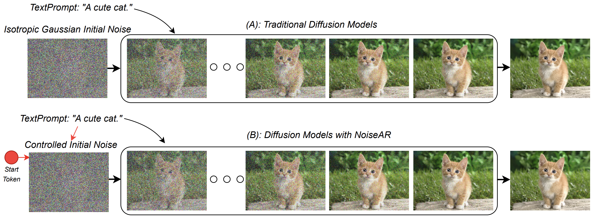

|
Xiangyue LiuPhD Candidate
Hong Kong University of Science and Technology
|


Biography
I'm a third-year PhD candidate of ECE at Hong Kong University of Science and Technology (HKUST), under the supervision of Prof. Ping Tan. I was an RA at Tsinghua University advised by Prof. Li Yi and Prof. Yang Gao. I obtained my M.S. from Beihang University, and B.Eng from Northeast Normal University.
My research interests are broadly in computer vision, with a focus on text-to-image generation (T2I), unified understanding and generation models, multimodal large language models (MLLM), AI-generated content (AIGC), etc.
News
- [10/2025] We organized IROS 2025 workshop on Advancements for Intelligent Robotics in 4D Scenes.
- [11/2024] One paper accepted to 3DV 2025.
- [02/2024] One paper accepted to CVPR 2024.
- [09/2023] I started pursuing my Ph.D. degree at HKUST.
Selected Publications
*: equal contribution|
Plan-and-Paint: Collaborating Semantic and Noise Reasoning for Text-to-Image Generation Xiangyue Liu, Ping Tan [preprint] |
|
|  |
NoiseAR: AutoRegressing Initial Noise Prior for Diffusion Models Zeming Li*, Xiangyue Liu*, Xiangyu Zhang, Ping Tan, Heung-Yeung Shum |
|
GaussianAvatar-Editor: Photorealistic Animatable Gaussian Head Avatar Editor Xiangyue Liu, Kunming Luo, Heng Li, Qi Zhang, Yuan Liu, Li Yi, Ping Tan 3DV 2025 (no rebuttal) |
|
|
GenN2N: Generative NeRF2NeRF Translation Xiangyue Liu, Han Xue, Kunming Luo, Ping Tan, Li Yi CVPR 2024 (score 554) |
|
Research Interns

|
Tencent AI Lab Topic: Digital Avatar Sept. 2023 - Dec. 2024. Mentors: Dr. Yuxin Wen and Dr. Qi Zhang |
|
Megvii Research Topic: NeRF, Monocular Video Reconstruction Apr. 2022 - Aug. 2023, AIC. Mentors: Weixin Xu, Yi Yang, and Dr. Shuchang Zhou Topic: Deep MVS Jul. 2021 - Apr. 2022, 3D Vision. Mentors: Haotian Zhang and Xiao Liu Topic: Visual SLAM Aug. 2019 - Apr. 2020, SLAM & AR. Mentors: Dr. Yijia He and Xiao Liu |
|
Education & Visiting

|
The Hong Kong University of Science and Technology Ph.D. Candidate in ECE Sep. 2023 - Future. Advisor: Prof. Ping Tan |

|
Tsinghua University Research Assistant in IIIS Aug. 2021 - Aug. 2023. Advisors: Prof. Li Yi and Prof. Yang Gao |

|
Beihang University M.Sc. in Software Engineering Sep. 2018 - Jun. 2021 |
|
Northeast Normal University B.E. in Software Engineering Sep. 2014 - Jun. 2018 |
Honors & Awards
| [06/2021] Outstanding Graduate Student of Beijing. |
| [08/2020] Top 0.3% in 3D Instance Segmentation Challenge at IJCAI 2020. (Rank 2 out of 559) |
| [10/2016] National College Students Innovation and Entrepreneurship Training Program. |
Teaching Assistant
| 2025-2026 | Spring | Electronic and Information Technology (HKUST, ELEC1010) |
| 2024-2025 | Fall | Computer Communication Networks (HKUST, ELEC3120) |
| 2023-2024 | Spring | Electronic and Information Technology (HKUST, ELEC1010) |
Community Services
| Workshop Organizer: IROS |
| Journal Reviewer: TPAMI |
| Conference Reviewer: ICCV, ECCV, ICRA, 3DV, ICLR |